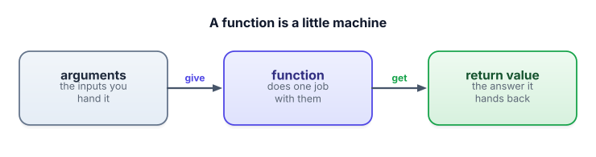

The Python you'll actually use
You don’t need to “learn Python” to start. You need about eight small ideas, and you’ll meet every one of them here, with runnable examples. Come back to this page any time something looks unfamiliar.
Why a little Python — and only a little
Python is the language almost all AI tooling speaks. The good news: applied AI work uses a surprisingly small slice of it. If you understand the eight things on this page, you’ll be able to read and run every example in this course. We’ll learn the rest just-in-time, when a lesson needs it. Open a Colab notebook and run each snippet as you go — predicting the output before you run is the fastest way to learn.
1 · Values and variables
A value is a piece of data — a number like 42, or text like "hello". A variable is a name you stick on a value so you can use it later. The = sign means “store the value on the right under the name on the left.”
model_name = "gpt-4o-mini" # text (a "string")
temperature = 0.7 # a number
max_tokens = 200 # a whole number
print(model_name, temperature, max_tokens)Names are yours to choose; pick ones that say what they hold. temperature beats t.
2 · Strings and f-strings (the most important one)
A string is text, written in quotes. Strings matter enormously here, because a prompt to an AI model is just a string. Often you want to drop a variable’s value into the middle of some text. An f-string (the f before the quote) lets you do exactly that: anything inside {curly braces} gets replaced by its value.
topic = "the water cycle"
grade = 5
prompt = f"Explain {topic} to a grade-{grade} student in 3 sentences."
print(prompt)
# -> Explain the water cycle to a grade-5 student in 3 sentences.This is how you’ll build prompts from data for the rest of your career. Get comfortable with f-strings and you’re halfway to prompt engineering.
3 · Lists
A list is an ordered collection of values, in square brackets. You’ll use lists for things like a set of documents, a batch of questions, or the tokens in a sentence.
questions = ["What is RAG?", "What is a token?", "What is an agent?"]
print(questions[0]) # first item -> "What is RAG?" (counting starts at 0!)
print(len(questions)) # how many items -> 3
questions.append("What is fine-tuning?") # add one to the endLists count from 0, not 1. So the first item is questions[0] and the third is questions[2]. This trips up everyone at first; soon it’s second nature.
4 · Dictionaries
A dictionary (or “dict”) stores key → value pairs, in curly braces. You look things up by their key instead of by position. This is everywhere in AI code — for example, a chat message is usually a dict with a role and content:
message = {"role": "user", "content": "Summarize this email."}
print(message["role"]) # look up by key -> "user"
print(message["content"]) # -> "Summarize this email."A whole conversation is then just a list of these dicts — a list of messages. You’ll see that exact shape constantly.
5 · Functions
A function is a reusable little machine: you give it some inputs (called arguments), it does a job, and it hands back a result (the return value).

You define one with def, and it’s indented underneath. Here’s a function that builds a prompt — exactly the kind of helper you’ll write all the time:
def build_prompt(topic, grade):
return f"Explain {topic} to a grade-{grade} student in 3 sentences."
# "call" the function by writing its name and giving it arguments
p = build_prompt("photosynthesis", 5)
print(p)The indentation isn’t decoration — in Python, the indented lines are “the inside of” the function. Same goes for loops and if below.
6 · Loops
A for-loop does something once for each item in a list. This is how you’d ask the same question of many documents, or process a batch.
questions = ["What is RAG?", "What is a token?"]
for q in questions:
print("Asking:", q)
# runs the indented line once per question7 · Making decisions with if
An if-statement runs code only when a condition is true. You’ll use it to handle cases — for instance, falling back when a model’s answer is empty.
answer = "" # pretend the model returned nothing
if answer == "":
print("No answer — try again.")
else:
print("Got:", answer)Note the double equals == means “is equal to?” (a question), while a single = means “store this” (a command). Mixing them up is a classic early bug.
8 · Importing libraries
Most of your power comes from libraries — bundles of code other people wrote. You bring one in with import, then use its tools with a dot. You already saw this with tiktoken.
import json # a built-in library for working with structured data
data = {"model": "local", "tokens": 12}
print(json.dumps(data, indent=2)) # pretty-print the dict as JSON textPutting it together
Here’s a tiny program that uses almost everything above — variables, an f-string, a list, a function, and a loop — to build prompts for several topics. This is genuinely the shape of real code you’ll write soon:
def build_prompt(topic):
return f"Write a one-line definition of {topic}."
topics = ["a token", "an embedding", "a prompt"]
for topic in topics:
prompt = build_prompt(topic)
print(prompt)- Variables name values with
=. Strings are text; f-strings drop variables into text — and prompts are just strings. - Lists
[...]are ordered collections (counting from 0). Dicts{key: value}look up by key — a chat message is a dict. - Functions (
def) take arguments andreturna value. Loops (for) repeat per item. if/else makes decisions. - Indentation defines what’s “inside” a function, loop, or if.
==asks “equal?”,=commands “store.” importbrings in libraries; use their tools with a dot, liketiktoken.encode(...).
1. Write a function greeting(name, language) that returns "Hello, Pavan!" when called as greeting("Pavan", "English") and "Hola, Pavan!" when language is "Spanish".
2. Make a list of three names and use a loop to print an English greeting for each.
▸ Show solution & reasoning
def greeting(name, language):
if language == "Spanish":
return f"Hola, {name}!"
else:
return f"Hello, {name}!"
names = ["Pavan", "Maria", "Sam"]
for n in names:
print(greeting(n, "English"))Why it’s built this way: the if/else picks the right template, and the f-string inserts the name — that “choose a template, fill in the variables” move is the seed of every prompt-building helper you’ll write. The loop then reuses the one function across many inputs, which is exactly how you’d run a prompt over a batch of documents.
You write conversation = [{"role": "user", "content": "Hi"}]. What is conversation[0]["role"]?
In Python, what does a variable actually hold?
You will see red error messages. They’re not scolding you — they’re directions. Python prints a traceback: a report of what went wrong and on which line. Two habits make errors harmless:
Read the last line first. The bottom line names the error type and a short message, e.g. NameError: name 'tiktoken' is not defined. That one almost always means you forgot to import it (or to run the install cell). KeyError: 'role' means you asked a dict for a key it doesn’t have. IndentationError means your spacing is off.
Then look at the line number. The traceback points at the exact line. Go there, re-read it slowly, and 90% of the time the fix is obvious. Copying the last line of an error into a search engine is a completely legitimate, professional move — every engineer does it daily.
That’s your toolkit and your Python. You’re ready for the real thing. Next, we open the box: how LLMs actually work.